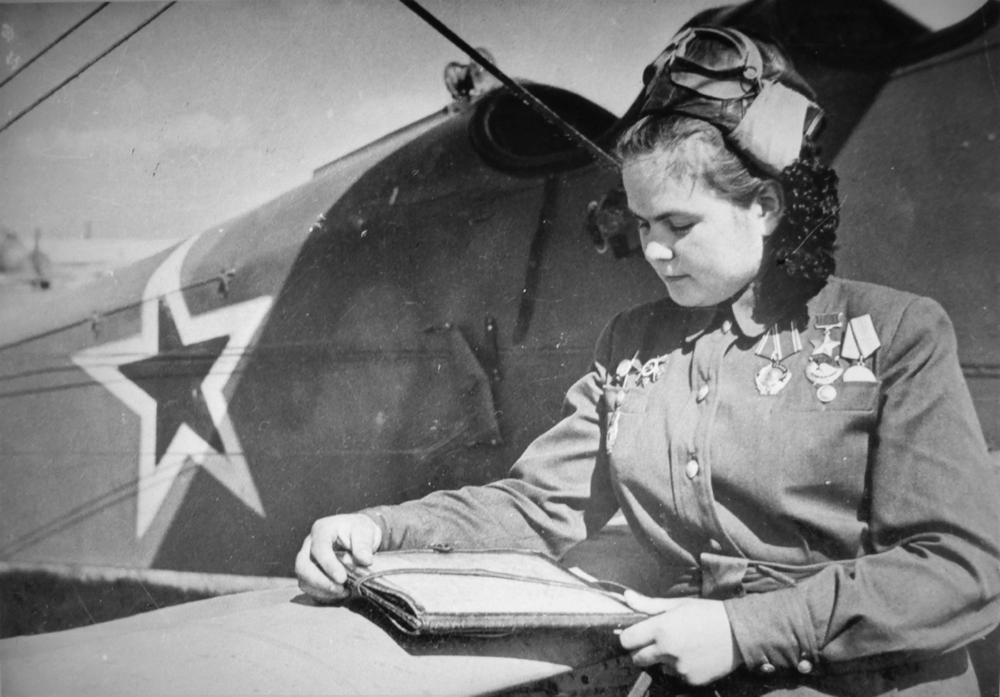
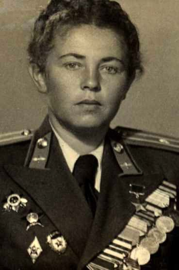

01 — героини
Две подруги из одного класса
Они учились в одной гомельской школе, вместе уехали в Москву и вместе попали в один и тот же женский авиационный полк. Одной суждено было вернуться домой Героем, другой — остаться в небе войны.
02 — квест
Пройдено 0 из 7 остановок
Маршрут пройден
Теперь вы знаете, почему у этой улицы такое имя
Расскажите об этом другим: поделитесь выставкой и поставьте хештеги.
03 — полк
04 — хроника
Хроника двух судеб
От рождения героинь до улицы, названной в честь Полины Гельман в Советском районе Гомеля.
05 — память
Гомель помнит
Места в нашем городе, где живёт память о двух лётчицах. Многие из них можно посетить вместе с классом или с семьёй.
06 — о годе
07 — работа
Как сделан сайт
08 — источники
На чём основана выставка
Все факты о героинях взяты из открытых источников: краеведческого портала, музея военной славы, городских и республиканских материалов.